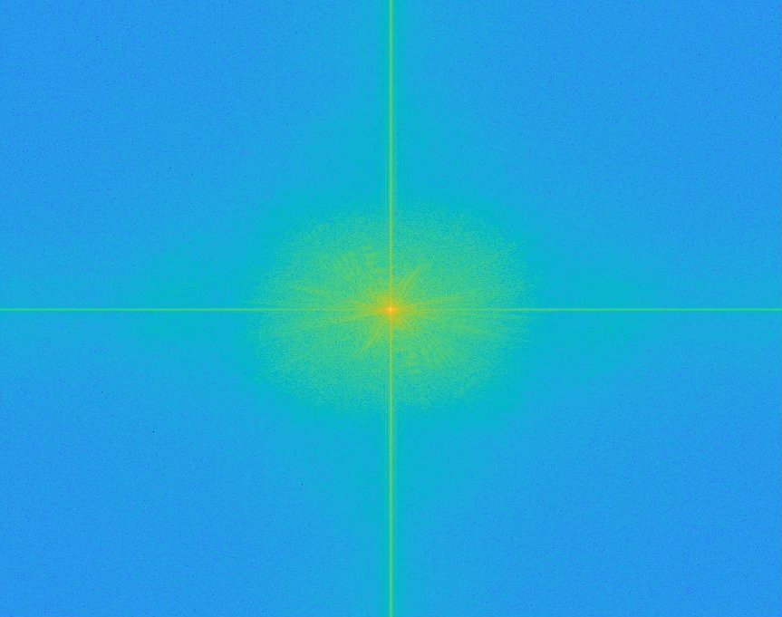
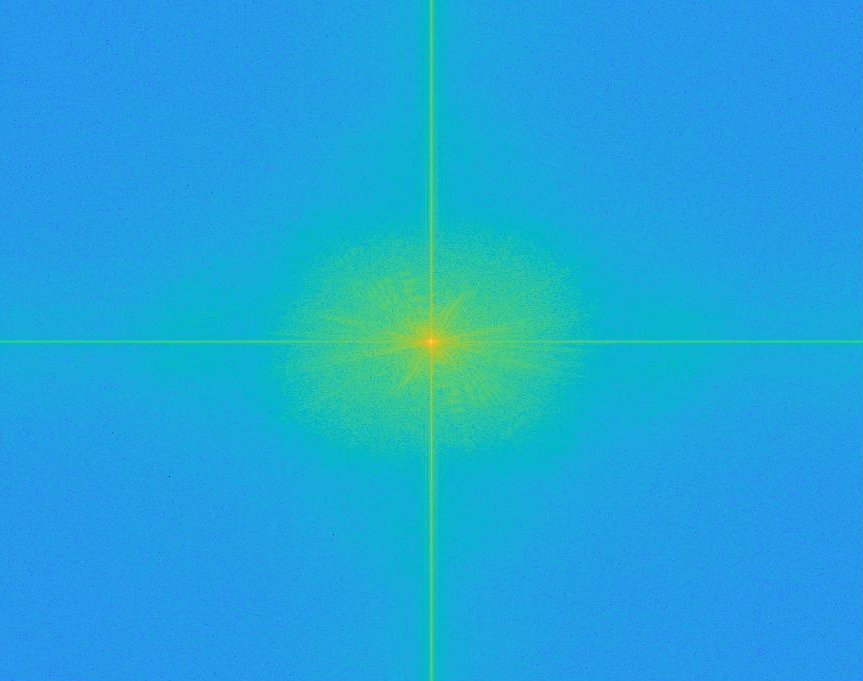
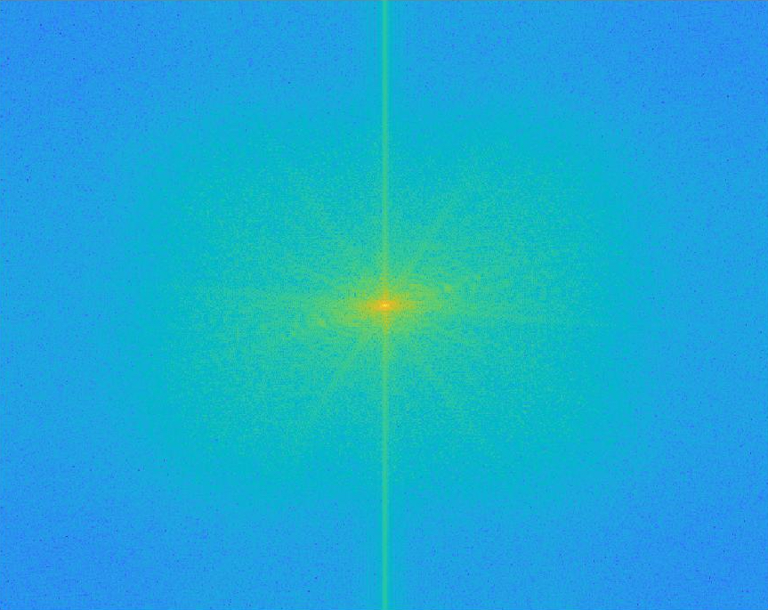
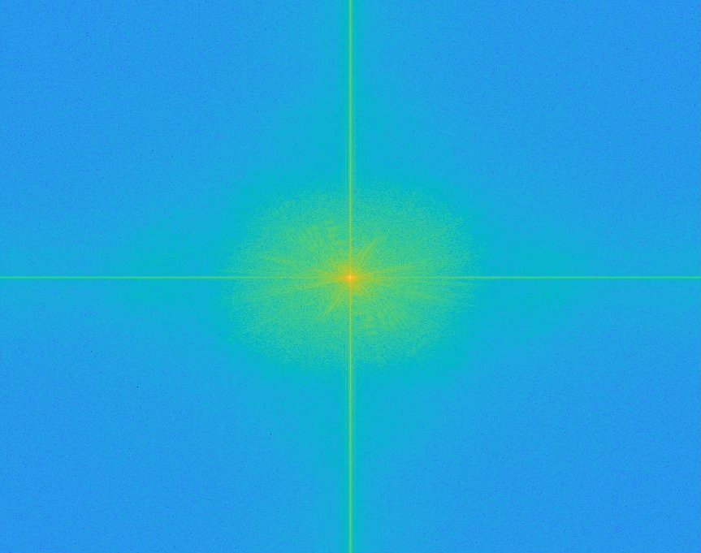

The following hybrid images were created using the process described in the SIGGRAPH 2006 paper. In this case, the image of The Weeknd was passed through a low-pass gaussian filter while the image of Drake was passed through a high-pass laplacian filter implemented as the impulse filter minus the gaussian filter. This process yields a hybrid image by exploiting our varying sensitivity to frequencies based on distance; higher frequencies dominate our perception at closer distances while we are only able to resolve lower frequencies at further distances.



I chose to use histogram equalization to enhance contrast in my images. Specifically, I used the method described in class to compute the frequencies of each intensity between 0 and 255 and equally spread them to create a contrast equalized image. The following picture was taken on Caltech campus in Pasadena.
I chose to use the HSV colorspace to perform color enhancement because the saturation channel corresponds nicely with the "vividness" of an image. In order to increase the values in the S channel while mapping them back to [0,1], I used the nthroot function described in class with n= 1.3. This function will also prevent oversaturation because it effects higher saturations values less. Note: I used a small value of n to prevent the images from looking artificial, but the effect of the enhancement can be seen
I chose to use the LAB colorspace to perform color shifting. This can be done quite easily by manipulating the a and b channels. To increase the "redness" and "yellowness" of an image, we increase chanels a and b , respectively. In order to keep the adjusted values within the [-128,127] range, we scale the adjustment by the distance from the right boundary using the following formula: x = x + (127-a)*alpha . The following images were created using alpha = .065 . The following picture is a sunrise in Manhattan at 5am.